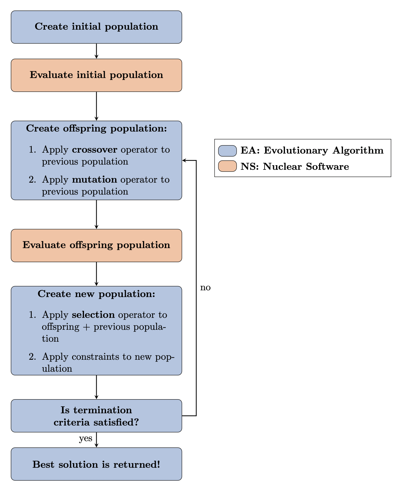
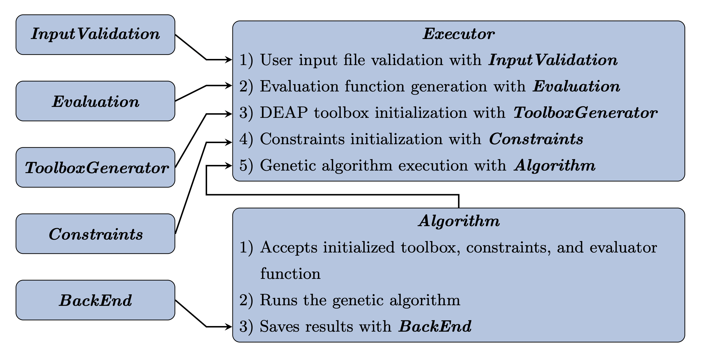

Theory and Methodology
Contents
Theory and Methodology
ROLLO provides a framework to couple an evolutionary algorithm driver with nuclear software, such as neutron transport and thermal-hydraulics codes, to optimize nuclear reactor design. ROLLO uses the DEAP python package to drive the evolutionary algorithm optimization process. ROLLO is nuclear code-agnostic and does not have dependencies on any nuclear software.
This flowchart outlines ROLLO’s evolutionary algorithm optimization process and how the nuclear evaluation software fits in it.
{kind=link}
ROLLO: Software Architecture
This figure depicts the ROLLO software architecture. ROLLO’s source code is hosted on Github.
{kind=link}
When the user runs a ROLLO input file, the Executor class drives ROLLO’s
execution from beginning to end. The Executor calls InputValidation to parse
the input file to ensure that the user defined all mandatory parameters and used the
correct formatting. Next, it initializes an Evaluation object based on the
evaluators specifications in the input file. It uses the Evaluation object to
create a function that will run each evaluator software with the desired input
parameters and return the output parameters calculated by the evaluator software.
Next, it uses the ToolboxGenerator to create an initialized DEAP toolbox object
based on the input file’s algorithm specifications. The ToolboxGenerator
object accepts the Evaluation object and registers it as the toolbox’s evaluate
tool. Then, it initializes a Constraints object to contain constraints
specified in the input file. Next, the Executor initializes an Algorithm object
that accepts the initialized DEAP toolbox and Constraints object. Finally, the
Executor class uses a method in the Algorithm object to run a general genetic
algorithm. The Executor class uses the hyperparameters from the DEAP toolbox,
applies constraints defined in the Constraints object, and calculates objective
functions using the evaluation function created by the Evaluation object;
all the while saving the results using the BackEnd class.
This table outlines the classes in the ROLLO software and describes each class’ purpose.
Class |
Description |
|---|---|
InputValidation |
The InputValidation class contains methods to read and validate the JSON ROLLO input file to ensure the user defined all key parameters. If they did not, ROLLO raises an exception to tell the user which parameters are missing. |
Evaluation |
DEAP’s fitness evaluator (as mentioned in Section 4.1.1) requires an evaluation function to evaluate each individual’s fitness values. The Evaluation class contains a method that creates an evaluation function that runs the nuclear software and returns the required fitness values defined in the input file. |
ToolboxGenerator |
The ToolboxGenerator class initializes DEAP’s toolbox and creator modules with genetic algorithm hyperparameters defined in the input file. |
Constraints |
The Constraints class contains methods to initialize constraints defined in the input file and applies the constraints by removing individuals that do not meet the constraint. |
BackEnd |
The BackEnd class contains methods to save genetic algorithm population results into a pickled checkpoint file and to restart a partially completed genetic algorithm from the checkpoint file. |
Algorithm |
The Algorithm class contains methods to initialize and execute the genetic algorithm. It executes a general genetic algorithm framework that uses the hyperparameters defined in the ToolboxGenerator, applies constraints defined in Constraints, evaluates fitness values using the evaluation function produced by Evaluation, and saves all the results with BackEnd. |
Executor |
The Executor class drives the ROLLO code execution with the following steps: 1) User input file validation with InputValidation, 2) Evaluation function generation with Evaluation, 3) DEAP toolbox initialization with ToolboxGenerator, 4) Constraint initialization with Constraints, 5) Genetic algorithm execution with Algorithm |